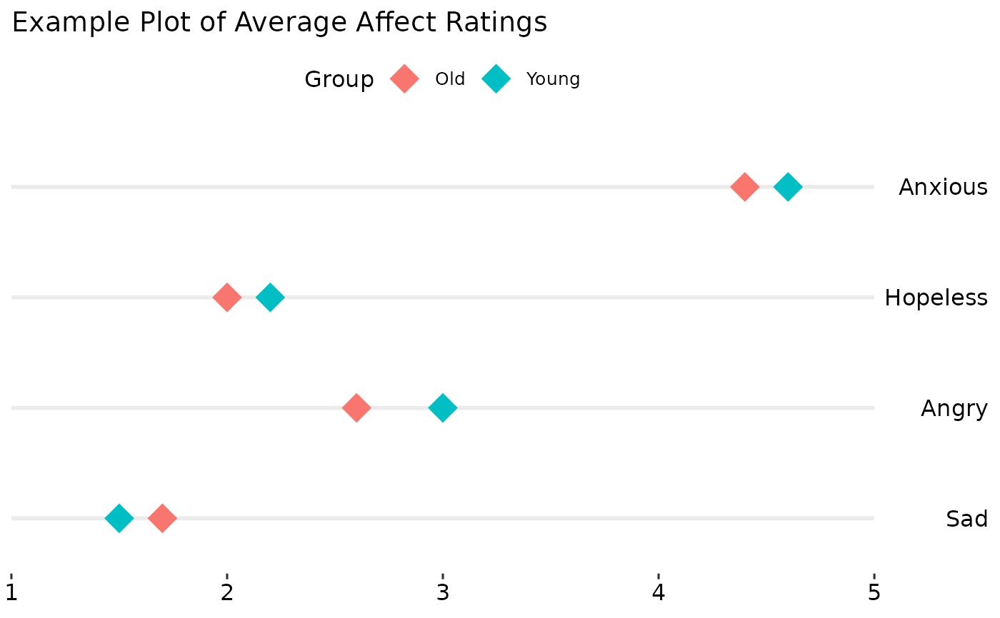

Creates a plot for likert scale
Arguments
- x
Variable to plot on the x axis (the likert scale responses or averages)
- y
The variable containing an index of the different items, should be integers
- leftLab
The variable with anchors for the low end of the Likert scale
- rightLab
The variable with anchors for the high end of the Likert scale
- colour
A character string giving the name of a variable for colouring the data, like a grouping variable. Alternately the colour of points passed to
geom_point- data
The data to use for plotting
- xlim
A vector giving the lower an upper limit for the x axis. This should be the possible range of the Likert scale, not the actual range.
- title
A character vector giving the title for the plot
- shape
A number indicating the point shape, passed to
geom_point- size
A number indicating the size of points, passed to
geom_point
Examples
library(JWileymisc)
library(ggplot2)
library(ggpubr)
testdat <- data.table::data.table(
Var = 1:4,
Mean = c(1.5, 3, 2.2, 4.6),
Low = c("Happy", "Peaceful", "Excited", "Content"),
High = c("Sad", "Angry", "Hopeless", "Anxious"))
gglikert("Mean", "Var", "Low", "High", data = testdat, xlim = c(1, 5),
title = "Example Plot of Average Affect Ratings")
testdat <- rbind(
cbind(testdat, Group = "Young"),
cbind(testdat, Group = "Old"))
testdat$Mean[5:8] <- c(1.7, 2.6, 2.0, 4.4)
gglikert("Mean", "Var", "Low", "High", colour = "Group",
data = testdat, xlim = c(1, 5),
title = "Example Plot of Average Affect Ratings")

gglikert("Mean", "Var", "Low", "High", colour = "Group",
data = testdat, xlim = c(1, 5),
title = "Example Plot of Average Affect Ratings") +
ggplot2::scale_colour_manual(values = c("Young" = "grey50", "Old" = "black"))
## clean up
rm(testdat)